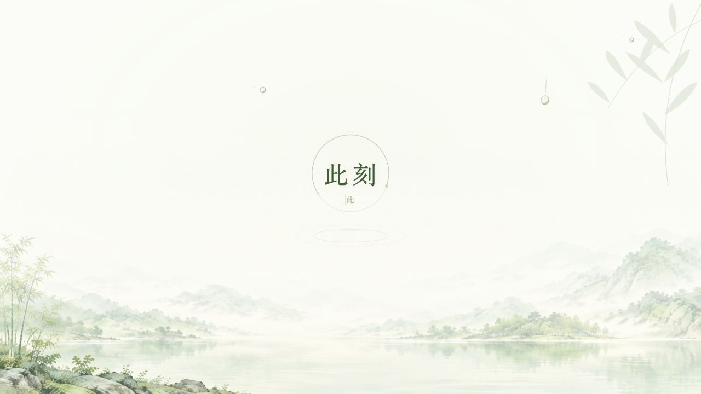
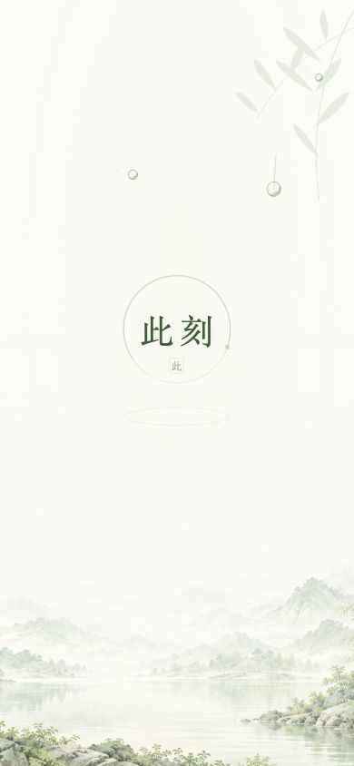

即时绘制纸白与SVG，青绿光晕和品牌开始显现，首帧不等待大图。
疏雨叩窗，山水在后。
2026-10-05参数已确认为F1。查看开发交接汇报 →。旧截图为历史取样，当前以共享引擎与冻结JSON为准。
打开持续雨景 · 调节密度、拖尾与水膜 → · 主账户设置交互原型 →
少量雨点撞上玻璃并飞溅；允许滑落的水珠以50ms为基准起滑。新湿痕有宽度，旧湿痕逐渐收窄，边缘是断续折光，并有局部背景放大和偏移。每次重播重新随机；关键请求就绪即进入首页。
首次加载含首页原型资源；之后重播可查看请求快慢的收束。
每次播放重新随机；逐帧取样保留同一场雨。
这是可运行的设计原型：等待时间由按钮模拟，不调用线上 API；进入后可操作 R8 首页和思绪。播放器上方控件、取样滑块与计时信息仅供评审，不进入产品。
环形墨线写入，竹梢展开，山水从雾中浮现；圆环不是百分比或进度条。
约650ms开始突然的撞击，4～7颗很小的水珠短暂飞散；没有同心圆，也没有每颗珠子附一根细尾。
1～5秒 · 窗上有雨
雨点以不规则间隔连续出现；R9.4可调密度、滑落比例、水膜宽度和其他参数。大多数珠子停在原地；只有少数在短暂停留后滑落。路径有轻微偏折，湿痕从原落点逐渐留到当前位置；不会提前画好一条长尾。品牌区域保持干净。
5秒以后 · 连续生长，不整段倒回
每次打开或重播用新的随机种子，落点、大小、飞溅方向、停留时间和滑落轨迹都会变化；雾层7.3/11.3秒、竹梢9.1秒、水纹5.7秒独立错相。局部呼吸没有统一“循环起点”，5秒那一帧不清场、不重置山水或品牌。点击“重新随机”可一直观看，再点击“关键请求现在就绪”退出。
R9.2 历史取样 · 3200ms（新水膜请看调参页）


等待规则
| 情况 | 行为 |
|---|---|
| 关键请求提前就绪 | 立即开始140ms收束，无最少播放1秒的限制；首页同时成为可交互状态。 |
| 超过1秒仍在等待 | 不规则间隔有新的飞溅与停留，只有少数水珠滑落；山水与品牌不重播。 |
| 3.5秒仍未就绪 | 轻提示“连接比平时慢”，不显示虚假百分比。 |
| 请求明确失败 / 候选30秒超时 | 停止长时间动效、清楚给出重试入口；不以假数据进入首页。 |
| 系统设置减少动态效果 | 静态品牌与淡山水，无闪亮、雨滴、描线、缩放或循环。 |
开发所需与工具判断
现有双端山水＋Canvas 2D＋Web Animations API 足够，不需要视频、3D模型、Blender或额外服务。生产接入需确定安全的首页就绪信号：账户、当前会话的数据、必要投影和首屏DOM已准备。装饰图、图片解码、通知及折叠区不作为新的额外等待门槛。
本地源码显示当前启动链包含 /api/auth/me、load()、会话草稿/待同步投影及 revealUserSession()。应先沿用现有安全就绪点，不能只看某一个请求返回就显示上一账户缓存。详见动效与接入规格。